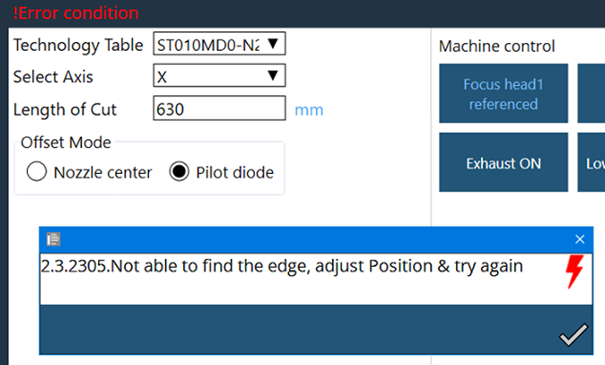

Hulladékvágás
A hulladékvágás funkció a lemeztábla fennmaradó, fel nem használt részének kézi vágására szolgál. Ez a funkció hasznos vékonylemez maradékanyagának vágásához, hogy a téglalap alakú lemezt könnyebben lehessen kezelni.
Ha aktiválták ezt a programot, akkor a felhasználónak meg kell adnia a vágási hosszat az X- vagy az Y-tengely mentén. A gép a vágófej aktuális pozíciójától kezdi a vágást és a kiválasztott tengely mentén halad a megadott hosszig.
Ezenkívül a felhasználó kiválaszthatja a megfelelő technológiatáblázatot, valamint a művelethez használni kívánt eltolási üzemmódot.
A Magasság befagyasztási távolság határozza meg, hogy a magasságszabályozás mikor hagyja abba a beállítást. 1-10 mm közötti értéket kell beállítani, amely azt jelzi, hogy a magasságszabályozás előre mennyivel fogja abbahagyni a beállítást. Célszerű ezt a 10 mm-es tartományon belül beállítani. A kezelő a vágási erőfeltételek alapján szükség szerint módosíthatja ezt az értéket.

Eljárás:
-
Használja a fúvóka közepét vagy a vezérlődiódát a munkapozíció rögzítéséhez (Válassza ki a lemez sarkát 5 mm-es tűréssel).
-
Futtathatja a programot.
-
A 10 mm-es magasság befagyasztási távolságnak megfelelően a program a magasságszabályozást a munka eltolástól fogja befagyasztani, azaz 5 mm-es belső és 5 mm-es külső távolságtól, összesen 10 mm távolságban. Amint a 10 mm-es befagyasztási távolság teljesül, a lézer 5 mm-es külső részről sugároz, majd a lézeráramban behatol a munkadarabba, amíg a vágáshossz konfigurálása be nem fejeződik.
-
Hozzáadták az automatikus élfelismerés opciót, hogy a gép megkeresse a lemez pontos szélét, majd elindítsa a hulladékvágást:

-
A Nem opció kiválasztása esetén a program az aktuális pozícióval folytatódik.
-
Ha az Igen beállítást választja, akkor az élfelismerés az aktuális pozíciótól számított 20 mm-es ellentétes irányú mozgással történik.
-
Ha képes megtalálni az élt ezen a távolságon belül, akkor a program beállítja az aktuális pozíciót és elindítja a vágást.
-
Ha nem sikerül megtalálni az élt ezen a távolságon belül, akkor a program a következő üzenettel megszakad:
-
A túlméretezett lemezt használó ügyfelek esetében (lemezméret-tűrés), a hulladékvágási folyamat során Y-határérték hiba léphet fel. Az ilyen esetek elkerülése érdekében fontolja meg a magasságkövetés befagyasztási távolságának csökkentését.
-